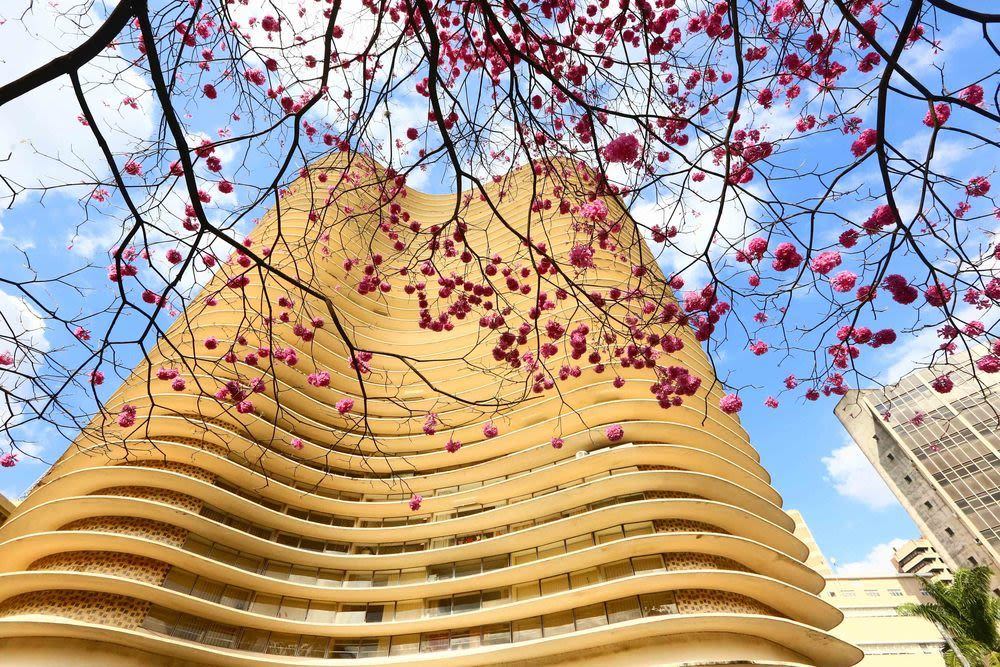
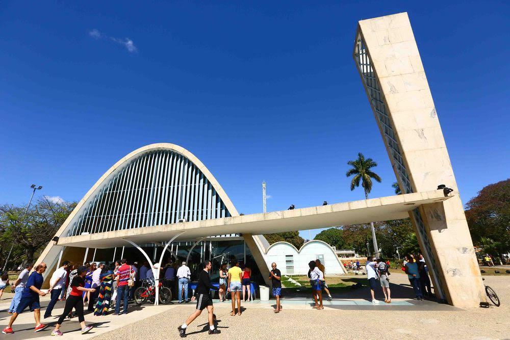
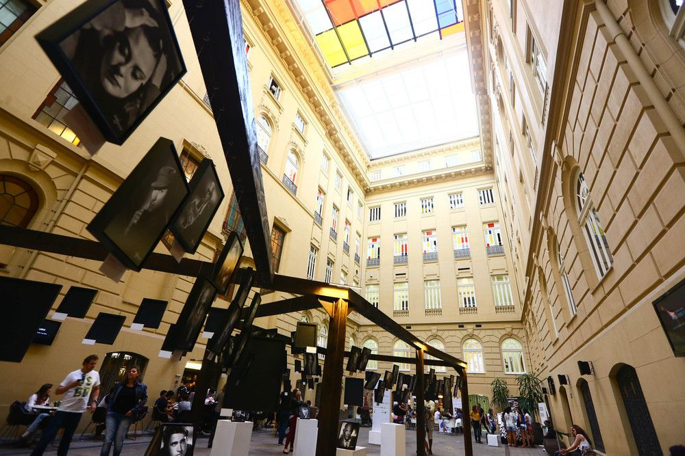
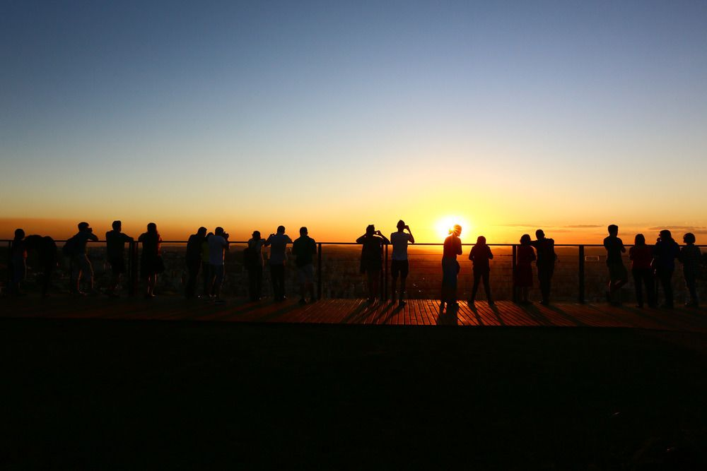
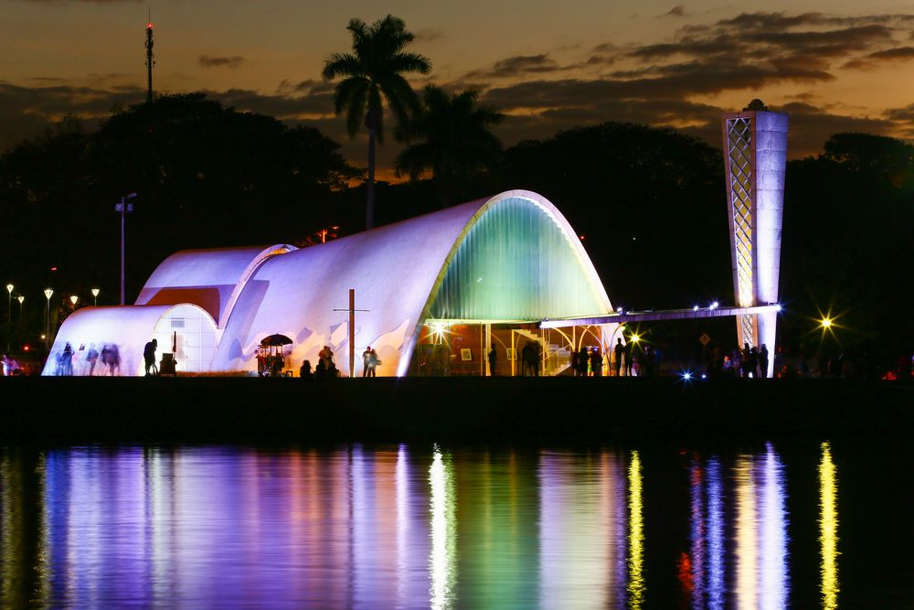
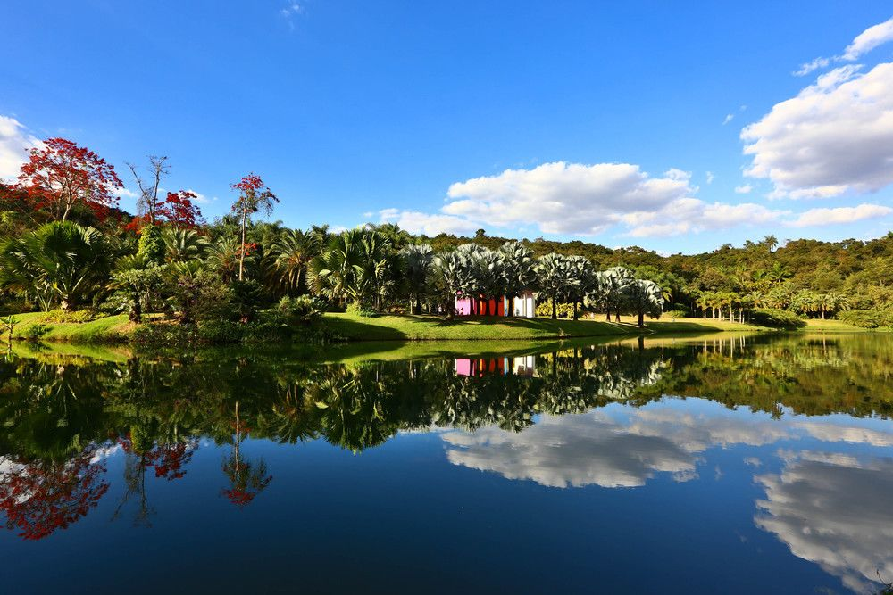
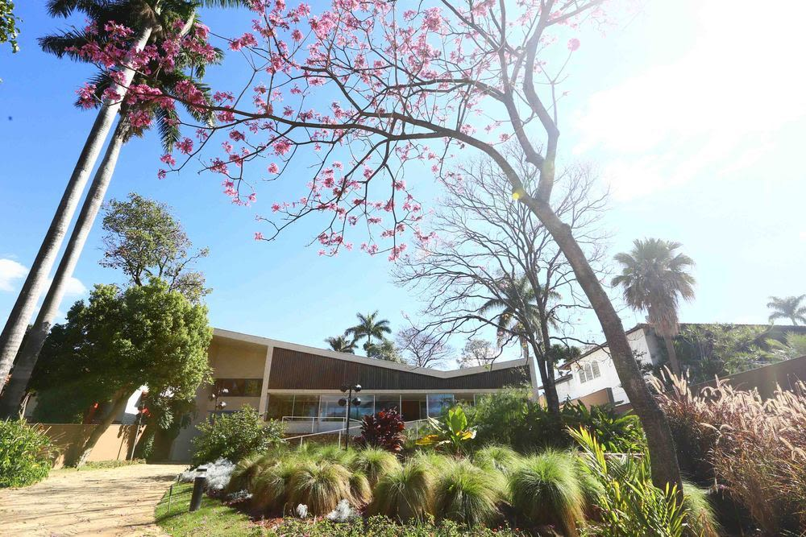
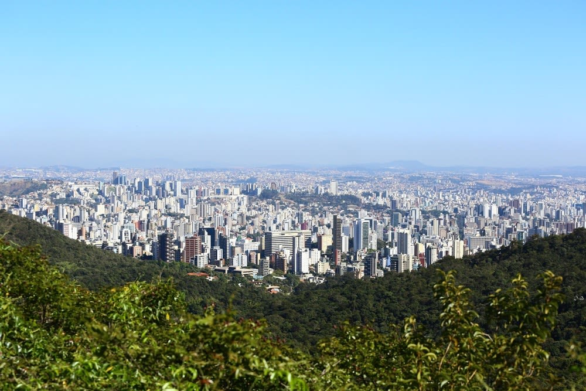

Belo Horizonte
A boa mistura de uma grande capital com o jeitinho de cidade do interior conquista rapidamente os visitantes que chegam a Belo Horizonte. Sentir-se em casa na capital de Minas Gerais é tarefa fácil, especialmente quando essa tarefa é acompanhada de um pão de queijo quentinho, um “cafezin” ou uma boa cerveja gelada nos milhares de botecos locais. Será necessário pouco tempo para entender a leveza com que os mineiros encaram a vida e rapidinho você já estará falando com aquele simpático e charmoso sotaque tão inconfundível. Bastará um final de semana de passeio pela Lagoa da Pampulha, nos museus da Praça da Liberdade ou experimentando alguns quitutes no Mercado Central para “Beagá” te conquistar.
À primeira vista, Belo Horizonte pode não estar na lista de prioridades de viagem. Porém a capital mineira é o lugar perfeito para quem busca roteiros rápidos e de baixo custo. Turistar em Belo Horizonte é fácil e muito barato. A cidade é daquelas que exigem apenas um mapinha na mão para ser percorrida. E o melhor é saber que grande parte dos pontos turísticos de Belo Horizonte são gratuitos, por isso, invista em nos feriados prolongados para ir a BH.

O que fazer em Belo Horizonte
Belo Horizonte conta com um rico circuito cultural gratuito, que inclui os museus da Praça da Liberdade e o maravilhoso Conjunto Arquitetônico da Pampulha, recentemente declarado Patrimônio Cultural da Humanidade pela UNESCO. Impossível resistir à beleza da Igrejinha de São Francisco e às curvas da Casa de Baile, especialmente ao pôr do sol. E se você tiver um pouquinho de tempo a mais por lá, ainda poderá ir ao inacreditável Instituto Inhotim, um dos mais belos museus de arte contemporânea do mundo. Aproveite os dias na cidade também para entender que o nome Belo Horizonte vai muito além de uma simples nomenclatura. Os parques e mirantes da cidade oferecem sempre belas paisagens, com entardeceres dignos de serem atrações turísticas, como o Mirante do Mangabeiras.

Sabemos que Belo Horizonte é repleta de boas atrações, mas uma característica em especial é sempre lembrada pelos moradores como sendo o ponto forte da cidade. Estamos falando dos botecos e restaurantes que fazem a vida dos mineiros ainda mais feliz. Eles costumam dizer que em BH as pessoas estão sempre bebendo para comer ou comendo para beber. A ordem não importa. O que importa mesmo é degustar e aproveitar o melhor de BH na mesa do bar.
Confira tudo o que fazer em Belo Horizonte e aproveite ao máximo quando estiver na capital de Minas Gerais.

Hotéis em Belo Horizonte
Os hotéis de Belo Horizonte estão bem concentrados em poucas regiões, assim como as principais atrações turísticas. A cidade não costuma ficar lotada, especialmente nos finais de semana, o que torna a capital mineira uma ótima pedida para quem deseja uma viagem rápida e sem altos custos. As regiões que mais concentram hotéis em BH são os bairros de Lourdes, Savassi e o Centro, os três são vizinhos e se locomover entre eles é muito fácil. Algumas das principais atrações de BH estão nessa região. Outro ponto da cidade que atrai muitos visitantes é a Lagoa da Pampulha, uma das regiões mais turísticas da capital mineira. Na Pampulha há pouca oferta de hotéis, mas eles suprem bem a necessidade de quem precisa se hospedar por lá.
Caso seja necessário se hospedar próximo ao aeroporto apenas para um pernoite ou por algumas horas, não é uma boa opção escolher um hotel em BH. O melhor é ficar nos arredores do próprio aeroporto ou nas regiões vizinhas de Lagoa Santa e Vespesiano.
Quando ir a Belo Horizonte
As atrações de Belo Horizonte podem ser visitadas durante todo o ano, o que torna BH uma ótima pedida para qualquer viagem. Se quiser investir no período com melhor clima, prefira viajar entre os meses de abril e setembro, quando as chuvas são escassas e o sol reina no céu. Ótimo para caminhar entre os museus, parques e pontos turísticos de Belo Horizonte.

Como chegar a Belo Horizonte
O Aeroporto Internacional de Belo Horizonte - Confins (CNF) é a principal porta de entrada para quem chega a Belo Horizonte de outros estados. Localizado no município de Confins, a 40 km do centro de BH, o Aeroporto de Confins não é muito prático, porém é o único aeroporto de Belo Horizonte a receber voos de todas as regiões do Brasil. Sair do Aeroporto Internacional de Belo Horizonte - Confins pode levar mais tempo que o voo, a depender do trânsito.
Para quem pretende chegar a Belo Horizonte de carro, as principais estradas de acesso são a BR-040 (para quem chega do Rio de Janeiro e de Brasília), a BR-381 (para quem chega de São Paulo) e a BR-262 (para os visitantes que viajam do Espírito Santo).

Quanto tempo ficar em Belo Horizonte
Belo Horizonte é ideal para ser visitada em um feriado prolongado ou uma viagem rápida. Em quatro dias é possível conhecer os principais pontos turísticos de Belo Horizonte. Se você tiver uma semana disponível, aproveite para visitar atrações próximas, como Inhotim e até Ouro Preto.

Um pouco da história de Belo Horizonte
Belo Horizonte não fazia parte das cidades históricas do ciclo do ouro e diamantes em Minas Gerais, nem das regiões cafeeiras. O antigo Arraial de Curral del Rei, até o século XIX, era apenas um de ponto de passagem para tropeiros e uma comunidade dedicada à pecuária e agricultura. Com a queda da monarquia, a Proclamação da República, o fim do ciclo do ouro e a falta de possibilidade de crescimento de Ouro Preto (até então capital, com nome de Vila Rica), surgiu a necessidade de trocar a sede da capital de Minas Gerais. O então Arraial de Curral del Rei foi escolhido pelo governador Afonso Pena para ser a nova capital mineira.

A cidade, planejada pelo engenheiro Aarão Reis para ter até 200 mil habitantes, foi inaugurada em 12 de dezembro de 1897 na Praça da Liberdade sob nome de Cidade de Minas. Do antigo arraial, resta apenas uma pequena casa na região central de BH, onde hoje funciona o Museu Histórico Abílio Barreto. Quatro anos mais tarde, a cidade ganhou o nome de Belo Horizonte. Entre as décadas de 30 e 40, BH recebeu alguns de seus icônicos símbolos, alguns a pedido do então prefeito Juscelino Kubitscheck. Foi nesse período que a capital mineira recebeu os trabalhos de Oscar Niemeyer, Burle Marx, Alfredo Ceschiatti e Candido Portinari. Hoje, a capital mineira abriga cerca de 2,5 milhões de moradores e ainda assim consegue manter o “jeitim” de interior que tanto conquista os forasteiros.

Quer conhecer mais a capital mineira? Veja neste Guia de Belo Horizonte tudo sobre o que fazer em BH, os principais pontos turísticos, onde comer, as melhores opções de hospedagem na capital mineira, quando ir, como chegar e muito mais!